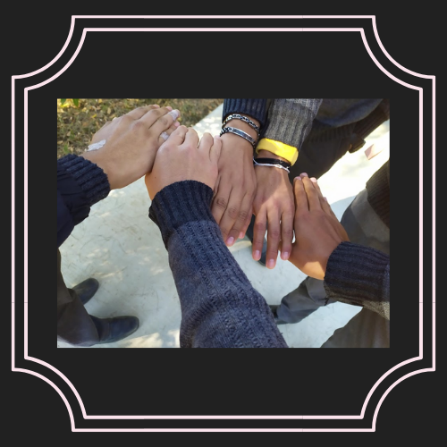
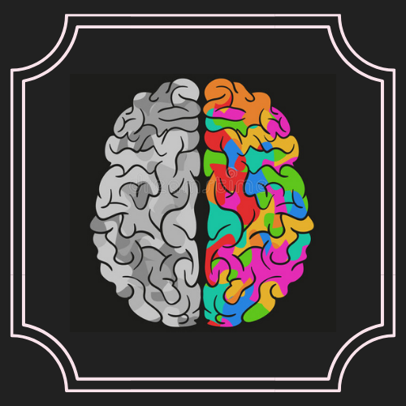
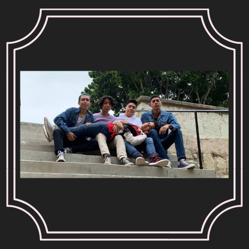
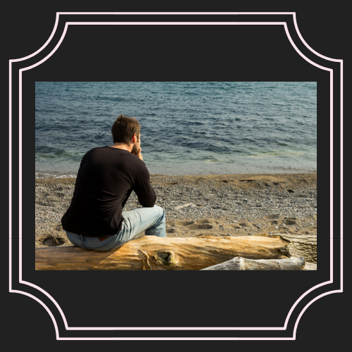

Galería
Muerte

Amistad

Placer
Libertad
Sentido de la vida

Soledad

Tristeza
Dios
Miedo
Lo insignificante
Integrantes
Ariadna Victoria Conde
José Alfredo Alonso Martínez
César Gabriel Marcial Ruiz
Juan Pablo Lechuga Jaimes
Orlando Hernández García